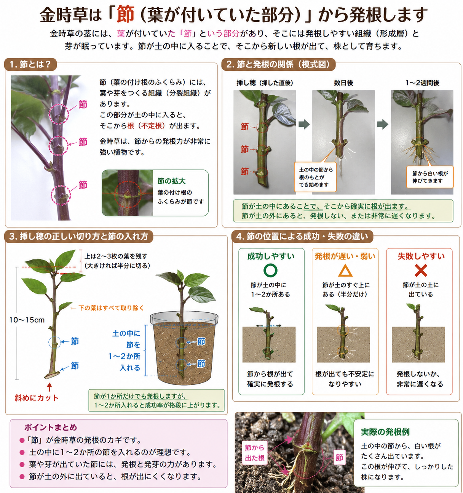

10月12日は、プランターで育てている3本の金時草を記録しました。左の苗は茎が横へ伸び、プランターの縁を越えて大きな葉を広げていました。中央と右の苗にも長い葉があり、大きな葉の間や枝先には小さな葉が見えていました。葉には穴や欠けもありましたが、枝先に小さな葉が残っているのが、私には気になるところでした。
その10月12日から20日。今回は、あの3本がプランターで葉を広げるまでの経過を、挿し木をした頃までさかのぼって書いておこうと思います。最初にプランターへ直接挿したものは、そのままでは育ちませんでした。一方、3号ポットで根を出した3本は、8月30日にプランターへ植え替えることができました。
次に金時草を挿すとき、私がまず見ておきたいのは、葉が付いていた「節」が土の中に入っているかです。
金時草は節から発根する。葉を取ったあとも、付け根の位置を見ておく
節は、茎に葉が付いているところです。下の葉を取った挿し穂でも、葉の付け根があったところに、小さなふくらみや跡が残ります。赤紫色を帯びた茎を上から順に見ていくと、葉が付いていた場所と、その間のすっと伸びた部分の違いが分かります。
金時草の挿し木では、この節のあたりから新しい根が出ます。挿した茎から出てくる根は「不定根」と呼ばれます。図では、葉を外したあとの節の位置と、そこから白い根が伸びる様子を並べています。葉を取り除くと、つい茎の切り口の方に目が行きますが、土に挿す前に、どこに葉が付いていたかを見ておくと、根が出やすい節を土の中へ入れやすくなります。

挿し穂をどれだけ深く挿すかは、節の間隔を見て決めたい
図では、10〜15cmほどの挿し穂を例にしています。上の葉を2〜3枚残し、土に入る部分の葉を取り除きます。残す葉が大きい場合は、半分ほどに切る方法もあります。下葉を取ったら、その跡を目印に、下側の節が土の中に1〜2か所入る深さを目安にします。
同じくらいの長さに切った茎でも、節と節の間隔はそろっていません。たとえば、切り口から最初の節までが長い枝では、茎の先を少し土に入れただけだと、節が土の上に残ります。逆に、下の方に節が詰まっている枝なら、同じ深さでも節が二つ入ることがあります。私なら、挿す深さを先に決めるより、下葉を取ったあとに節の位置を見て、一番下の節が土で覆われるところまで入れます。上に残した葉まで埋まりそうなら、節一つを土に入れる形で考えます。
図には、挿した直後から白い根が伸びるまでの流れも載せています。数日後や1〜2週間後というのは、図の中で経過を示すための目安です。次に挿し木をするときも、日数だけで根が出たと判断せず、葉の張りや枝先の様子を見ながら経過を追いたいと思います。
直接挿した枝と、3号ポットで発根した3本を振り返って
7月22日の記録では、挿し穂に約2時間吸水させ、ルートンを付けて、プランターと3号ポットに挿しました。その時点では、どちらもしおれずに葉を保っていました。その後、プランターに直接挿したままのものは枯れましたが、最初から3号ポットで育てていた1本と、途中でポットへ移した2本は発根し、8月30日に3本そろってプランターへ植え替えました。
今振り返ると、挿した直後に葉がしおれていなかったことと、その後に根が出て育ったことは、分けて記録しておきたいと思います。最初はどちらも葉を保っていても、その後の経過には違いが出ました。当時は、挿し穂ごとに節を何か所土に入れたかまでは記録していません。直接挿した枝が枯れた理由も、節の位置だけでは説明できないと思います。土の乾き方や置き場所など、あとから比べたいことも残りました。
10月12日にいちばん大きく張り出していた左の苗は、最初から3号ポットで育てた1本です。途中でポットへ移した中央と右の苗も、左とは広がり方が違いますが、それぞれ葉を伸ばし、枝先に小さな葉を付けていました。植え替えたときは同じプランターに並んだ3本でも、そこに至るまでの経過は一つずつ違います。これからも、3本をまとめて眺めるだけでなく、どの苗がどんなふうに枝葉を伸ばしていくのかを見ていきたいです。
次の挿し木では、土に入れた節の数も記録したい
次に挿し木をするときは、枝を切った日や挿した場所と一緒に、下葉をどこで取り、節を何か所土に入れたかも書いておこうと思います。節が一つ入った枝と二つ入った枝があれば、葉がしおれるか、枝先の小さな葉がいつ開くか、植え替えのときにどこから根が出ているかも見比べてみたいです。
春にアサギマダラが庭に来てくれたらと思って植え始めた金時草です。まずは、夏に根を出してプランターに移した3本が、季節が進む中でどんな姿を見せるのか。葉の広がりや枝先の変化と一緒に、今回まとめた挿し木のことも、次に育てるときのために残しておきます。